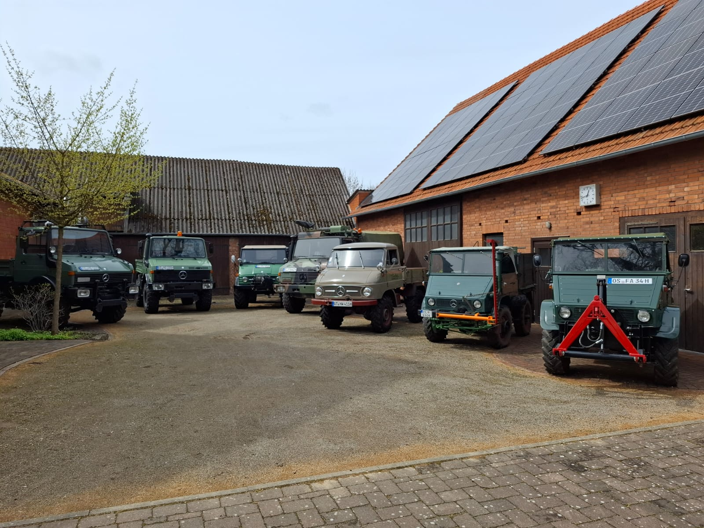

Am Sonntag, den 12. April 2026, trafen sich rund zwanzig Personen um 11:00 Uhr auf dem Hof Blanke in Bad Laer-Müschen. Sechs von ihnen waren mit ihrem Unimog angereist. Nach einer herzlichen Begrüßung und einer guten Stunde des Austauschs über Fahrzeuge, Technik und Vereinsleben stand der wichtigste Punkt des Tages an: die Gründung der UVC Regionalgruppe Emsland–Osnabrück.
Die Gründung war im Vorfeld mit dem UVC Dachverband abgestimmt und markierte den offiziellen Start der neuen Regionalgruppe. In offener Runde wurden die nächsten Schritte besprochen: Ein eigenes Logo sollte entstehen, ebenso ein Webauftritt zur Präsentation der Gruppe und ihrer Aktivitäten. Auch organisatorische Themen wie zukünftige Treffen, Ansprechpartner und gemeinsame Projekte wurden diskutiert.
Nach dem offiziellen Teil wurde der Sonntag mit einem kleinen Grillen fortgesetzt. In entspannter Atmosphäre klang der Tag aus, bevor sich die Unimogs und ihre Fahrer am Nachmittag auf den Heimweg machten. Damit war der Grundstein für eine lebendige und engagierte Gemeinschaft gelegt.
Ein Eindruck vom Gründungstag der UVC Regionalgruppe Emsland–Osnabrück:
